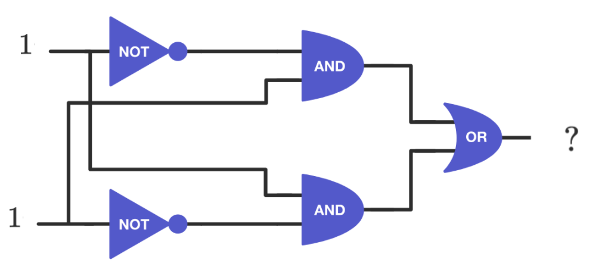

Lesson 3 - Logical Operators
At the end of this lesson, you will be able to:
- Evaluate simple circuits using the AND, OR, and NOT gates.
- Use the logical operators
and,or, andnotto build more complex conditions.
One condition is often not enough. You might want to act only if it's raining and cold, or if someone is a student or a senior. Logical operators let you combine true/false values into bigger questions.
Where this comes from: logic gates
This idea reaches all the way down to the hardware. Deep inside the CPU, tiny switches called logic gates combine electrical signals - "high" voltage stands for true, "low" for false. The three basic gates are AND, OR, and NOT, and they behave exactly like the everyday words. Play with each one below (flip the switches and watch the output bulb):
Logical operators in Python
Python gives you those same three operations as words you can put right into a condition: and, or, and not.
| Expression | Meaning |
|---|---|
| x > y and a < b | Is x greater than y AND is a less than b? (both must be true) |
| x == y or x == z | Is x equal to y OR is x equal to z? (either one will do) |
| not (x > y) | Is the expression x > y NOT true? (flips true and false) |
So our input-validation check from the last lesson, if grade < 0 or grade > 100:, reads exactly how it sounds: "if the grade is below 0 or above 100, it's invalid."
 Bug Alert:
Bug Alert:
In the program below, x = 1, y = 4, and z = 3, and we want to check whether any one of them is equal to 2. None of them is, so we would predict the program would say "2 is not found." Run the program to see what actually happens.
Surprised? It prints "There is a 2!" even though none of our variables is 2. Remember - the operands on either side of a logical operator must each be true or false on their own. Here, Python reads x or y or z == 2 as x or y or (z == 2) - only the z == 2 part is an actual comparison. The x and y operands are just the bare integers 1 and 4! This causes unexpected results because in computer science, 0 is false and anything else is true - so x (which is 1) counts as true all by itself, which makes the whole or expression true.
def main():
x = 1
y = 4
z = 3
if x or y or z == 2:
print("There is a 2!")
else:
print("2 is not found.")
main()The fix is to write each comparison out in full, so every operand is its own true/false test: if x == 2 or y == 2 or z == 2:
Practice
What is the output of this circuit when the two inputs are TRUE (the light switches are turned ON)? Note: The two wires which cross each other are not connected.

Show Solution
The output is 0, or FALSE. The input to the AND gates is a 1 and a not-1 (0). 1 AND 0 is 0. The two 0's are then input to the OR gate, and 0 OR 0 is also 0!
How high is "high voltage"?
Show Solution
When transistors became common in computer circuitry, "high" voltage was about 5 volts - enough to make the transistors work, light a small LED, or (nowadays) power a USB flash drive. "Low" voltage has always been close to 0 volts. As circuits got smaller, manufacturers lowered the voltage to save power and heat; today's CPUs and RAM run at roughly 1.3 to 1.5 volts.
Check for understanding
Coming up next: The last lesson of the unit puts decisions inside decisions (nesting), and shows how the functions you wrote in Unit 3 can make your conditions cleaner.